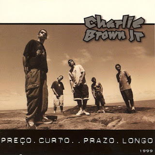

Biografia - Charlie Brown Jr.
Charlie Brown Jr. foi uma das bandas mais influentes do rock brasileiro, conhecida por misturar rock, punk, rap, reggae e skate rock. Formada em Santos (SP) em 1992, destacou-se nos anos 1990 e 2000 com letras sobre juventude, liberdade e questões sociais.
O vocalista Chorão (Alexandre Magno Abrão) foi o principal símbolo da banda. A formação original contava com Champignon (baixo), Marcão (guitarra), Renato Pelado (bateria) e Thiago Castanho (guitarra).
Entre os álbuns de maior sucesso estão Transpiração Contínua Prolongada (1997), Preço Curto... Prazo Longo (1999) e Bocas Ordinárias (2002), com hits como “Proibida pra Mim”, “Zóio de Lula” e “Só os Loucos Sabem”.
Com a morte de Chorão em 2013 e de Champignon meses depois, a banda chegou ao fim. Mesmo assim, seu legado segue vivo na música brasileira.